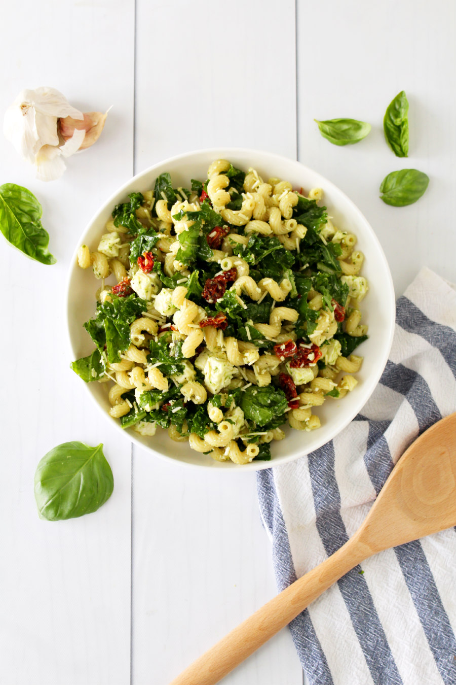

Home
Kale Pesto Pasta Salad

Description
This kale pesto pasta salad is a staple in my house! It is always so hard
finding easy, healthy, and delicious recipes, but look no further! This pasta
salad is made with cavatappi pasta, kale, pesto, feta cheese, parmesan, and
sundried tomatoes.
Ingredients
- 16 oz. pasta (cavatappi, cellentani, or any type of corkscrew)
- 1 lemon
- Crushed red pepper flakes
- 1 large bunch of kale
- 10 oz. of pesto
- 6 oz of feta cheese crumbles
- 1 cup of shredded Parmesan
- 12 oz. of sundried tomatoes
- Salt and pepper to taste
Steps
- Bring a large pot of salted water to a boil. Cook the pasta according to the package instructions. Drain, rinse under cold water, and set aside.
- Place the kale in a large mixing bowl. Drizzle with 1 tablespoon of the sundried tomato oil and gently massage the oil into the leaves.
- Add the cooled pasta, pesto, feta, Parmesan, sun-dried tomatoes, and lemon to the kale. Toss until evenly combined.
- Season with additional salt and pepper to taste. Serve immediately or refrigerate until ready to enjoy.